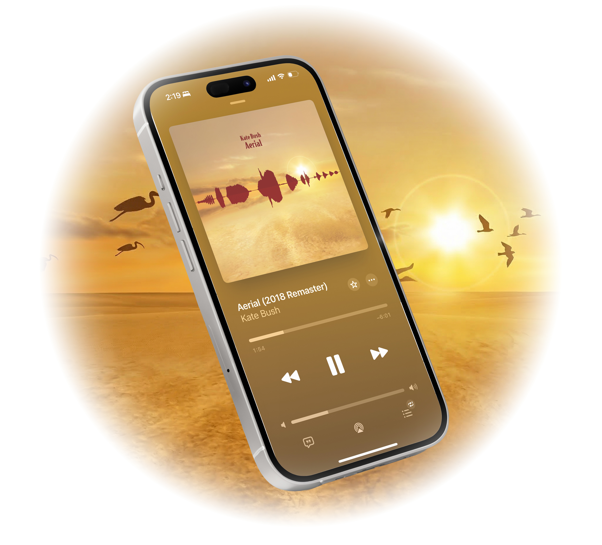
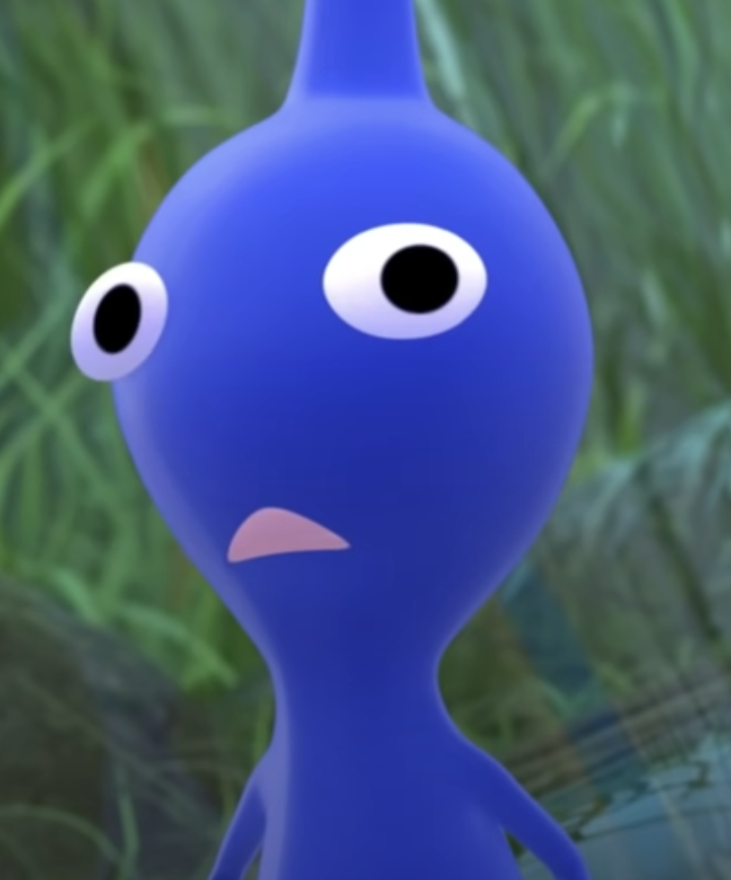

(1) 오늘은 일찍 일어나야 한다.
약 2개월 전,
꽤 느긋한 생활을
하고 있던 방학.
보통은 12시쯤 일어나 하루를 시작하는 그런 생활이지만
그날은 일찍 병원에 가야 했기 때문에, 오랜만에 아침 일찍 일어났다.
다행히 검사 결과는 심각하지 않았다.
"큰 병은 아니고, 약만 잘 먹으면 금방 나아요~^^" 라고 들었던 것 같다.
안도를 하며 병원을 나왔다.

평화로운 세상을 만끽하며, 기분 좋게 버스 정류장으로 걸어갔다.
(2) Aerial을 듣다.
버스가 좀처럼 오지 않았다.
15분쯤 기다린 끝에 겨우겨우 버스가 도착했고, 자리에 앉아 여느 때처럼 헤드폰을 썼다.
그날은 왠지 오랜만에, 실험적인 음악이 듣고 싶었다.

그래서 케이트 부시의
'Aerial'
앨범을 듣기 시작했다.
좋아하는 앨범이었지만, 모르는 곡이 몇 개 있었다.
앨범과 같은 제목인
Aerial
이 그런 곡이었다.

... 분위기가 묘했다....
재밌는 음악이었지만,
점점 들을수록 남에게 추천은 못할,
(3) 재앙..
헤드폰 배터리가 없나?.....
5초 정도 원인을 추측하고 있었다.
헤드폰을 벗는 순간,
버스 안에 엄청난 볼륨의 음악이 울려 퍼졌다...
.
.
.
케이트 부시가 귀를 찌르며 웃고 있었다.
헤드폰 연결이 끊기고, 듣던 음악이 최대 음량으로 울려 퍼지고 있었던 것...

머릿속에 스친 건,
알람.................
알람이 작동한 것이었다...
그 알람은 강제로 모든 볼륨을 최대로 끌어올린다.
듣던 음악까지 모조리...
하필 케이트 부시가 미친 사이비처럼 웃는 파트가 동네방네
울려퍼진 것.
버스 안 사람들이 동시에 나를 봤다.
앞자리 아주머니 한 분도 뒤를 돌아보고,
옆자리 남자도,
기사님도 백미러로 나를 봤다......
당황해서 어서 끄려 했지만, 쉽게 꺼지지 않는다.
문제를 풀거나 미션을 수행해야 꺼진다.
버스 안에서 난
"휴대폰을 흔들어 잠금을 해제하세요!! :D"
라는 미션을 완료해야만 했다...
와중에 케이트 부시는 계속 웃었다.
'아-하하하하하!!!'
(4) ㅠㅠ....
30초 가량에 걸쳐 (핸드폰을 흔들어서...) 마침내 알람을 끄는 데 성공했고,
버스는 다시 조용해졌지만
난 평화를 되찾지 못했다...
창밖만 바라보며 집까지 갔다.
전에도 몇 번 밖에서 알람이 울린 적 있었지만
나름 빠르게 대처를 했기 때문에 안일했던 난,
그날 이후 트라우마로 인해 하루에도 두 번씩 알람이 꺼져있는지 확인을 하게 되었다....
지금도 가끔 케이트 부시를 들으면 그날이 떠오른다.
조심 또 조심...